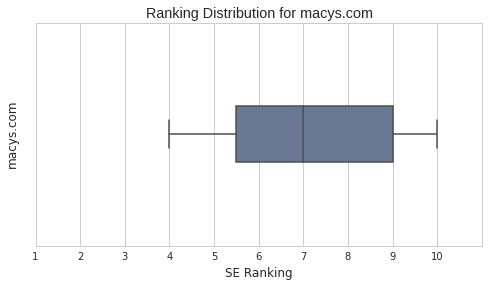

Summer's a season for love! That's why we, the Data Science Student Society at UCSD, created this unique data project especially for Macy's.com. Our exploratory analysis provides a quick overview and some insights on how Macy's and other similar domains rank for wedding keywords searches online.
This is immensely signficant to Macy's $27 billion retail business, as of 2015, and in particular the 10% and growing slice that online web sales occupy in the industry overall. Macy's, however, is slightly more successful and has a larger account owing to its exclusive vendors, retail strategy, customer satisfaction, and success in leveraging technology to the optimal advantage.
In respect, our preliminary exploration (EDA) of Macy's search data visualizes and sheds light on outliers, trends, and patterns for a specific subindustry: weddings. EDA is a starting point and can open doors to future investigations and research down the line, say for instance a machine learning/predictive task to model the ranking of a Macy's.com webpage. Considering we have interesting features.
Excited yet? Let's take a look at our data!
A sample dataset was generously collected and provided to us by running through list of 142 wedding-related phrases (but only containing 70ish unique words), likely obtained from Google analytics. The data gathering was completed in no time at all, thanks to Mr. Brian Randy Ta's very clever script. And the entire process is symbolized by the handy diagram shown here.
Simply counting, the dataset has:
1411 Total records
588 Unique Titles
547 Unique Links
One of the Society's top minds, Dr. Sang Han, has enhanced our basic Jupyter tech and hacked it up to produce a basic view of the data:
Some remaining associated trivia about how the data was gathered are:
the "Rank" proportions is close to a uniform distribution with 142 records for ranks no. 1-7 and 139 records for ranks no. 8-10 (7×142 + 3×139 = 1411).
1342 (95%) of the top-level domains are commercial (.com or .co) and 17 (1.2%) are edu, org, and miscellaneous
the other 52 (4%) of links are "No Link found" (corresponds to image results), E! Online (news results) and Cambio?
As mentioned in the data gathering section, there are 142 phrases used to acquire the search results, but they only have 74 unique words, the majority (50) of which only appear once. Each phrase has on average 3-4 words, and the interesting details of their relations appears in this sphagetti of a diagram I affectionately call our "wordgraph." A more concise version appears as an interactive visualization that captures a sense of scale:
{kind=link}
bigger nodes indicate greater keyword apperance
denser links indicate more connections
"Wedding", "Gift(s)", "Registry", "Ideas" are popular words and act as central hubs. A few leaf nodes that appear on the outer fringes ("360 / finder / items / search / uk /wording") of the wordgraph have been combined. Important word relationships are emphasized and more subtle relationships have now become visible.
Based on the keyword relations, we believe users typically are poking around and searching for wedding gifts. The wedding industry is a big business and quite complex, but for the average curious wedding invitee, we'd guess that they are looking for gift ideas to purchase. For the wedding hosts, they would be interested in a bridal registry, which Wikipedia describes as "a service provided by a website or retail store to assist engaged couples in the communication of gift preferences to wedding guests." Weddings are very a big deal (and quite a handsome opportunity to make a large sum of profit)!
A bridal registry is a service provided by a website or retail store to assist engaged couples in the communication of gift preferences to wedding guests.
A wordcloud for text data is complimentary, and we made 10 of them for descriptions among each of the 10 ranks. Wordclouds are used to immediately highlight the most prominent and frequent words, but in this special case it's not as sensational than it usually is - the 10 wordclouds contain more or less the same bigrams and trigrams, many of them matching our keyword phrases.
Therefore variation of words among ranks should be compared using other techniques. Below we see the vocabulary size of better ranked web pages being smaller. As the rank increases further pass no. 1, the vocabulary size increases by the hundreds. Focus on fewer and more relevant words!
Which words though? An intriguing question that leads to a grouped bar plot comparing the frequency of 15 common words among the 10 ranks. Although 22 words appear on the horizontal axis, they are the top 15 most frequent in their respective rank categories. Green-red are colors used frequently in engineering (software, traffic, civil) to represent good/bad or safety/danger, but they are used in our case to emphasize contrast. Even being ranked no. 10 on search engine results is a good sign in practice.

Prepositions and pronouns are usually stopwords removed in text analysis, but they happen to be details that matter in search engine rankings, due to their high frequency. Although prepositions are not necessarily bad, it would be safer to conserve their usage. Plurals are usually redundant. Also, "wedding" is our obvious topic, but everyone likes a "unique gift"! For a similar comparison, see the one describing titles (be sure to have "real popular knot & gift items for the bride").
{kind=link}
It's true that our prized topic is "wedding", but what kinds of other interesting sub-topics are the search results talking about? We'll use the most recent and hottest topic-modelling technique to approach our investigation: Latent Dirichlet Allocation (LDA).
Fancy name and complicated theoretical math proofs aside, LDA can help us explore the structure/categories of our search results. It works by following 2 intuitive premises:
The text of a search result is a combination of "topics"
Each topic is a combination of words appearing in search result texts
The number of topics is hand picked by expert humans to open for interpretation. Sang has discovered 10 topics describing the certain types of wedding gift categories while my 7 chosen topics identify and uncover different types of websites and their user shopping experience that they uniquely provide, as listed here
In one of our faculty advisor's winning research paper using LDA, his model incorporates Yelp and Amazon clothing data in order to discover different categories of local businesses and clothing types. In general, he aptly advises: "When training data is scarce, the benefit gained from modeling review text is the greatest." The Macy's wedding SEO data is a subset of the entire web search space and is in context quite sparse, so his keen observation naturally extends to our titles and description texts.
Now we know what kind of general topics our search results contain!
Here are excellent resources on LDA for further review:
Wedding Expert Diane Hu's exciting tutorial
Professor Julian's winning paper: Hidden Factors and Hidden Topics: Understanding Rating Dimensions with Review Text
Before analyzing Macy's ranking directly, we should understand it in context and comparison with other similar domains. Otherwise, we may fall into mental traps like thinking, "oh, there are 12 best websites ranked no. 1!"
But did you know those 12 only appear once (although registryfinder.com, appearing thrice and having a good rank, seems to have potential)? In a dataset with 1411 records and as a statement on search results in practice, appearing once is almost invisible! In fact, 201 out of the 246 unique domains (~80%) in our data appear only 5 times or less.
Fortunately by employing exploratory methods, such as clustering analysis and multidimensional scaling to study our data's structure, we can avoid misrepresentation and focus on visualizing clear, big picture patterns.
Multidimensional scaling (MDS), shown in the scatterplots below, transforms all our high-dimensional and sparse text description data and helps us see macys.com in a more accurate and simple two-dimensional scale - we can easily tell that macys.com is similar to other big online retail stores like Amazon, Kohl's, and Walmart. Surprisingly, it is also similar to news sites like Buzzfeed and Lifehacker. Lastly, our MDS plots advise that Macy's may consider striking a balance between acting as a big online retail generalist (as also found previously in our LDA visualization) for a variety of products and acting as a specialist like Nordstrom in wedding search (and we will compare their website rankings using our MDS findings here later on in a bubble plot).
Again, emphasizing what we said before about carefully visualizing in an a clear, illuminating perspective, we also use hierarchical clustering analysis to produce the figure below, known as a "dendrogram," to double check, compare with MDS, and give us a sense as to where Macy's stands.
The difference between the dendrogram and MDS is that the dendrogram is hierarchical, whereas MDS is flat. This is shown in how MDS treats each data point equally like a particle that repels and attracts every other particle until equilibrium/stability is reached and the similarity distances become fixed. However, the dendrogram compares similarity distances incrementally, step-by-step, one pair at a time like Noah and the Ark. As a result, our dendrogram shows that Macy's is the middle of "personalcreations.com" and two other significant subgroups.
Despite their difference, the dendrogram and MDS both attempt to visualize similarity and demonstrate that there seems to be ~4-5 clusters of websites. The type of clusters still remain open to interpretation, say big retailers, specialist websites, personal/handcrafted gifts, newest wedding fashions, etc. Perhaps another similarity definition may be used instead in the future, such as Jaccard/Tanimoto (clipping word appearances to 0-1) or cosine similarity (heard it's nice to use for sparse data like our text). The dendrogram and MDS currently use Euclidian similarity, on which a neat reference and intuitive explanation is provided by Sang's blogpost on points and distances.
Now that we've laid out some context, we have a fairer representation for our data in mind and can begin describing details specific to Macy's like: ranking, popularity, and some quick protips on how macys.com can become the go-to website for people searching up weddings purchases.
Great news! Macy's is in the top 30 for appearance in our wedding search data. High quantity is a good sign indeed, but do we have more details, so that macys.com can learn to do even better?
{kind=link}
Yes, our 11 macys.com results show that its rank distribution ranges between 4 and the minimum value of 10. In addition, the "registrysearch" page brings higher quality ranked results than the "wedding-registry" page, but it only appears two times whereas the wedding-registry appears 9.

Looking at the 11 records for macys.com out of the total 1411 and combining what we've seen in the previous discussion, we'll offer some reasonable Microstrategy:
the keyword phrase "wedding registry" brings up macys.com's best ranked result
a plural keyword phrase, as we've seen before in our green-red grouped barplots on search result descriptions, would also be likely to bring up smaller macys.com's ranks, no. 9-10
so use a singular keyword, like "gift" or "registry"
and "gift" over "registry" if there can only be one choice (vocabulary size for ranks matter!)
but remember to include "wedding" and be sure to place it before "gift"
search results are badly ranked for keyword phrases containing plurals, so match user keywords with Macy's texts to both use less plurals, or develop more Macy's-related website subpages that have text containing plurals to possibly increase the overall appearance count and a larger web presence
Finally, looking at the total 1411 search result records in a greater perspective, we also provide general a Macrostrategy to finish things off, using correlational analysis which enable us to draw meaningful pictures and understandable conclusions.
remembering what we mentioned before about ~80-81% of our 246 domains appearing 5 times or less, when we take into consideration that 80% subset and compare "appearance" along with other reasonable variables such as "# words in the title" or "# words in the description", the results are a bit dull like uncarbonated soda - correlation values between our variables are quite low, and the regression lines are flat like pancakes.
using our best judgment, we instead focus on the ~18-20% of frequent domains which appear more than 5 times as being a better representation of our search data
in doing so, we admit that the new subset will have improved "rank" variable values (a change of mean rank from 6 to 5) while "# words in the title/description" variables remain almost unchanged at averages 8 and 25 words respectively
a benefit that this new subset provides is seeing a clearer pattern that emerges: in the bubble plot below we simultaneously encode 4 variables
- Popularity (horizontal axis)
- Average/mean rank value for a site (vertical axis)
- Appearance count (bubble size)
- Similarity to Macy's text description (color)
immediately one can spot that popular and higher ranked sites tend to appear more frequently (i.e. etsy.com, realsimple.com, theknot.com), although there are exceptions like nordstrom.com which is twice as popular (17th) as macys.com (35th) but not appearing frequently
also those sites are either not at all or only sorta similar to Macy's text description results given their color-coded values from our MDS analysis
the advantageous aspect of the bubble plot is that we can compare macys.com to sorta similar sites like davidsbridal.com or theplunge.com as an indicator of how macys should learn to improve, and hopefully end up being the top 5 in the near future
We were even serendipitous enough to ask our very own UCSD alumna and Etsy Data Scientist extraordinaire, Diane Hu, for her expert opinion:
Since anyone can sell at Etsy, we have a huge breadth of products. One of our most trafficked categories is "weddings" and a lot of people discover Etsy for the first time when they get engaged
Got it. Actionable items are product volume, high variety, market freedom, and first impression for newly engaged couples, all of which we should pay attention to. Thanks Diane!
recap: the essence of the story that's being told by the bubble plot is, to be more "popular" (defined as an ordering of a website on decreasing mean rank values) focus on "appearance" or quantity (the number of times it appears in our data) first, and the quality of your site's mean rank value may also benefit
the previous point above is evidenced by the strong correlational value of 43 out of 100% between appearance and popularity, and the remaining correlations we found are based on the pairs plot:
in summary, our pairs plot advises us to be cautious in not using too many words in crafting our search result titles (8-9 is average but more than that can be risky) in order to optimize appearance count and therefore popularity
more words in our description may improve our search results' appearance count by only a small bit, but with a negative 24% correlation, it may also heavily lower the mean rank value
relevancy and parsimony deliver more frequent and better ranked search results, so use them wisely and judiciously
And thus concludes our preliminary exploratory analysis for the Macy's wedding keyword search dataset.
We hope we've helped you feel a little more enlightened on the wedding biz as well as whetted your appetite for SEO!
We'd love to be engaged with your bigger datasets and make even better machine learning predictions. And use additional, interesting features or techniques like word distance, document placement, PageRank, and deep learning to show off our awesome data-hacking skills and data-scientific prowess, so
Please, let us be your perfect gift!
Data Science Student Society